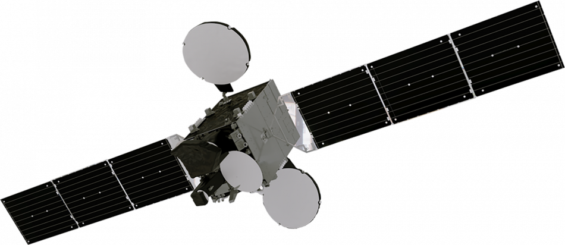
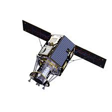
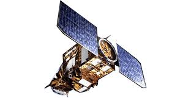

NEÜ Uzay ve Havacılık Mühendisliği Portalı
🌭 Günün Uzay Bilgisi
Yükleniyor...
0 beğeni
📡 Türkiye'nin Sahip Olduğu Uydular

TÜRKSAT 6A
- Fırlatma Tarihi: 8 Temmuz 2024
- Fırlatma Yeri: Cape Canaveral, ABD
- Taşıyıcı Roket: SpaceX Falcon 9
- Yörünge: 42° Doğu (Jeostatik)
- Görev Süreci: 15 yıl
- Yerlilik Oranı: %81+
- Üreticiler: TÜBİTAK UZAY, TUSAŞ, ASELSAN, CTech
- Kapsama: Türkiye, Avrupa, Orta Doğu, Güney Asya

İMECE
- Fırlatma Tarihi: 15 Nisan 2023
- Fırlatma Yeri: Vandenberg Uzay Üssü, ABD
- Taşıyıcı Roket: SpaceX Falcon 9
- Yörünge: 680 km Alçak Dünya Yörüngesi (LEO)
- Görüntü Çözünürlüğü: < 1 metre
- Görev: Yer gözlemi (sivil ve askeri)
- Üretici: TÜBİTAK UZAY
- Görev Süreci: 5+ yıl

GÖKTÜrK-1
- Fırlatma Tarihi: 5 Aralık 2016
- Fırlatma Yeri: Fransız Guyanası
- Taşıyıcı Roket: VEGA
- Yörünge: 700 km Güneş Eşzamanlı Yörünge (SSO)
- Görüntü Çözünürlüğü: < 0.5 metre
- Görev: Askeri ve sivil görüntüleme
- Üretici: TUSAŞ - Leonardo ortaklığı
- Görev Süreci: 7+ yıl